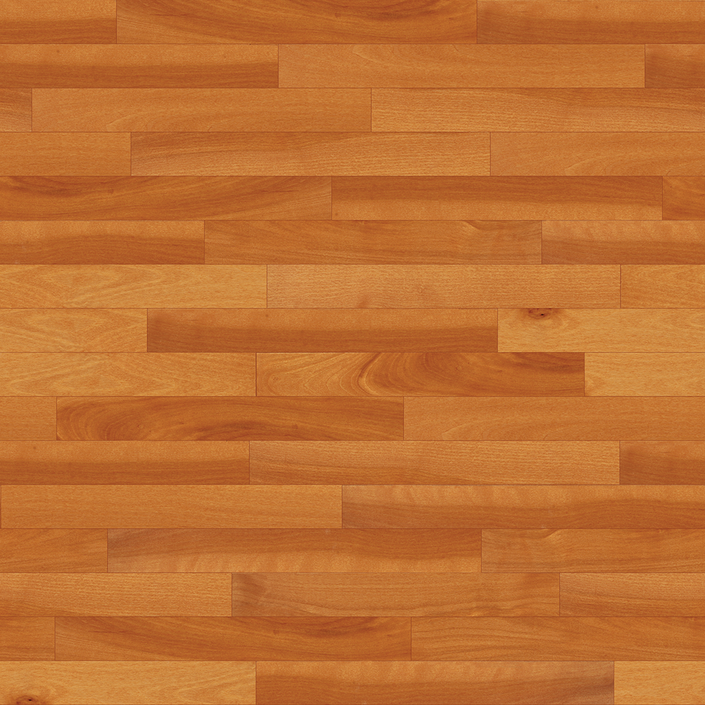

CSCI-610: Final Exam Image
Your browser does not support the HTML5 canvas element.
Controls
T
Toggle texture/shading mode
V
Per-vertex shading (in shading mode)
F
Per-fragment shading (in shading mode)
R
Reset view
Click+Drag
Mouse rotate
X / Shift+X
Rotate view up/down
Y / Shift+Y
Rotate view left/right